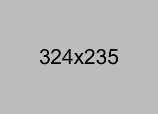

SAM
.
Hub
SAM.Hub
Home
(current)
Project Aktual
Esai & Project Belajar
Psikologi Industri
Tentang Filsafat dan Manusia
Review Jurnal HC & OD
Galeri
Profil Utama
Project Unggulan
Rekayasa Sistem Dasbor Logistik & Operasional Tambang
SOP & Regulasi
Pembuatan Standard Operating Procedure General Affairs
Data Integration
Integrasi Google Workspace untuk Kolaborasi Lintas Departemen
HC Management
Strategi Perekrutan & Pemetaan Penilaian Kinerja Karyawan
Problem Solving
Root Cause Analysis dalam Penekanan Inefisiensi Biaya
Esai & Project Belajar Terbaru
Peran Filsafat Manusia dalam Merancang Organizational Culture yang Sehat.
Filsafat & Mindset
(Kajian In Progress/Drafting) Opini mengenai bagaimana nilai-nilai fundamental kemanusiaan dapat menjadi fondasi dalam membangun budaya perusahaan...
Implementasi Psikologi Industri untuk Menekan Turnover Karyawan.
Psikologi Industri
(Kajian In Progress/Drafting) Pendekatan taktis berbasis data dan analisis perilaku untuk memahami faktor-faktor penyebab tingginya turnover...
Core Skills & Fokus
Human Capital
Organizational Development
General Affairs
Data Integration
Root Cause Analysis
Looker Studio
Team Leadership
Sertifikasi & Legalitas

Sertifikasi BNSP Human Capital Supervisor
Human Capital University
Ijazah S1 Aqidah & Filsafat Islam
UIN Datokarama Palu
Transkrip Nilai Akademik S1
UIN Datokarama Palu